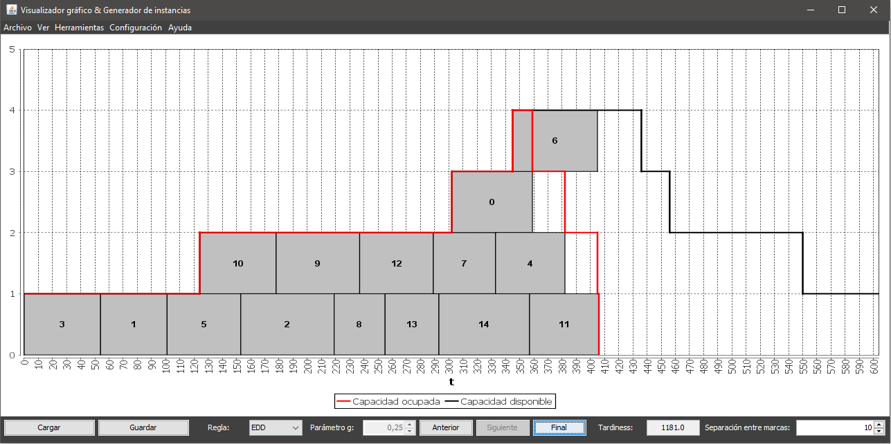

El Generador de instancias y visualizador gráfico es una aplicación que permite a los usuarios manejar instancias del problema de secuenciamiento de tareas en una maquina de capacidad variable
Esta herramienta permite:
La aplicación se encuentra totalmente internacionalizada, disponible en dos idiomas: español e inglés.